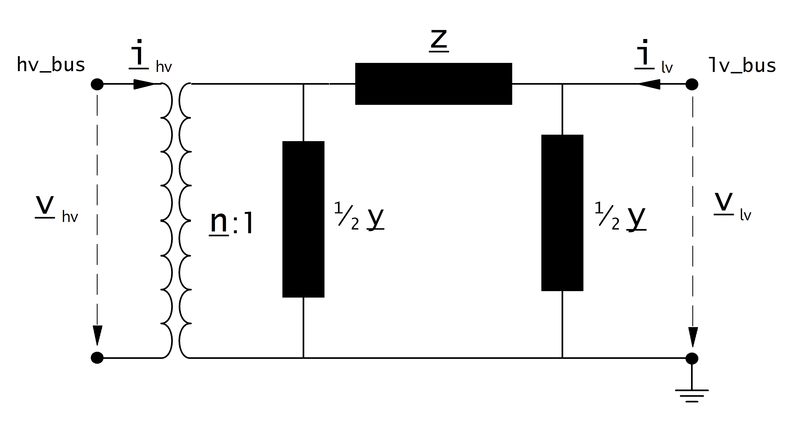

Transformer¶
Create Function¶
Transformers can be either created from the standard type library (create_transformer) or with custom values (create_transformer_from_parameters).
Input Parameters¶
net.trafo
Parameter |
Datatype |
Value Range |
Explanation |
name |
string |
name of the transformer |
|
std_type |
string |
transformer standard type name |
|
hv_bus* |
integer |
high voltage bus index of the transformer |
|
lv_bus* |
integer |
low voltage bus index of the transformer |
|
sn_mva* |
float |
\(>\) 0 |
rated apparent power of the transformer [MVA] |
vn_hv_kv* |
float |
\(>\) 0 |
rated voltage at high voltage bus [kV] |
vn_lv_kv* |
float |
\(>\) 0 |
rated voltage at low voltage bus [kV] |
vk_percent* |
float |
\(>\) 0 |
short circuit voltage [%] |
vkr_percent* |
float |
\(\geq\) 0 |
real component of short circuit voltage [%] |
pfe_kw* |
float |
\(\geq\) 0 |
iron losses [kW] |
i0_percent* |
float |
\(\geq\) 0 |
open loop losses in [%] |
shift_degree* |
float |
transformer phase shift angle |
|
tap_side |
string |
«hv», «lv» |
defines if tap changer is at the high- or low voltage side |
tap_neutral |
integer |
rated tap position |
|
tap_min |
integer |
minimum tap position |
|
tap_max |
integer |
maximum tap position |
|
tap_step_percent |
float |
\(>\) 0 |
tap step size for voltage magnitude [%] |
tap_step_degree |
float |
\(\geq\) 0 |
tap step size for voltage angle |
tap_pos |
integer |
current position of tap changer |
|
tap_phase_shifter |
bool |
defines whether the transformer is an ideal phase shifter |
|
parallel |
int |
\(>\) 0 |
number of parallel transformers |
max_loading_percent** |
float |
\(>\) 0 |
Maximum loading of the transformer with respect to sn_mva and its corresponding current at 1.0 p.u. |
df |
float |
1 \(\geq\) df :math:`>`0 |
derating factor: maximal current of transformer in relation to nominal current of transformer (from 0 to 1) |
in_service* |
boolean |
True / False |
specifies if the transformer is in service. |
*necessary for executing a power flow calculation
**optimal power flow parameter
Примечание
The transformer loading constraint for the optimal power flow corresponds to the option trafo_loading=»current»:
Electric Model¶
The equivalent circuit used for the transformer can be set in the power flow with the parameter «trafo_model».
trafo_model=“t“:

trafo_model=“pi“:
{kind=link}
Transformer Ratio¶
The magnitude of the transformer ratio is given as:
The reference voltages of the high- and low voltage buses are taken from the net.bus table. The reference voltage of the transformer is taken directly from the transformer table:
If the power flow is run with voltage_angles=True, the complex ratio is given as:
Otherwise, the ratio does not include a phase shift:
Impedance Values¶
The short-circuit impedance is calculated as:
The magnetising admittance is calculated as:
The values calculated in that way are relative to the rated values of the transformer. To transform them into the per unit system, they have to be converted to the rated values of the network:
Where the reference voltage \(V_{N}\) is the nominal voltage at the low voltage side of the transformer and the rated apparent power \(S_{N}\) is defined system wide in the net object (see Unit Systems and Conventions).
Tap Changer¶
Longitudinal regulator
A longitudinal regulator can be modeled by setting tap_phase_shifter to False and defining the tap changer voltage step with tap_step_percent.
The reference voltage is then multiplied with the tap factor:
On which side the reference voltage is adapted depends on the \(tap\_side\) variable:
tap_side=»hv» |
tap_side=»lv» |
|
\(V_{n, HV, transformer}\) |
\(vnh\_kv \cdot n_{tap}\) |
\(vnh\_kv\) |
\(V_{n, LV, transformer}\) |
\(vnl\_kv\) |
\(vnl\_kv \cdot n_{tap}\) |
Примечание
The variables tap_min and tap_max are not considered in the power flow. The user is responsible to ensure that tap_min < tap_pos < tap_max!
Cross regulator
In addition to tap_step_percent a value for tap_step_degree can be defined to model an angle shift for each tap, resulting in a cross regulator that affects the magnitude as well as the angle of the transformer ratio.
Ideal phase shifter
If tap_phase_shifter is set to True, the tap changer is modeled as an ideal phase shifter, meaning that a constant angle shift is added with each tap step:
The angle shift can be directly defined in tap_step_degree, in which case:
or it can be given as a constant voltage step in tap_step_percent, in which case the angle is calculated as:
If both values are given for an ideal phase shift transformer, the power flow will raise an error.
Result Parameters¶
net.res_trafo
Parameter |
Datatype |
Explanation |
p_hv_mw |
float |
active power flow at the high voltage transformer bus [MW] |
q_hv_mvar |
float |
reactive power flow at the high voltage transformer bus [MVar] |
p_lv_mw |
float |
active power flow at the low voltage transformer bus [MW] |
q_lv_mvar |
float |
reactive power flow at the low voltage transformer bus [MVar] |
pl_mw |
float |
active power losses of the transformer [MW] |
ql_mvar |
float |
reactive power consumption of the transformer [Mvar] |
i_hv_ka |
float |
current at the high voltage side of the transformer [kA] |
i_lv_ka |
float |
current at the low voltage side of the transformer [kA] |
loading_percent |
float |
load utilization relative to rated power [%] |
The definition of the transformer loading depends on the trafo_loading parameter of the power flow.
For trafo_loading=»current», the loading is calculated as:
For trafo_loading=»power», the loading is defined as: